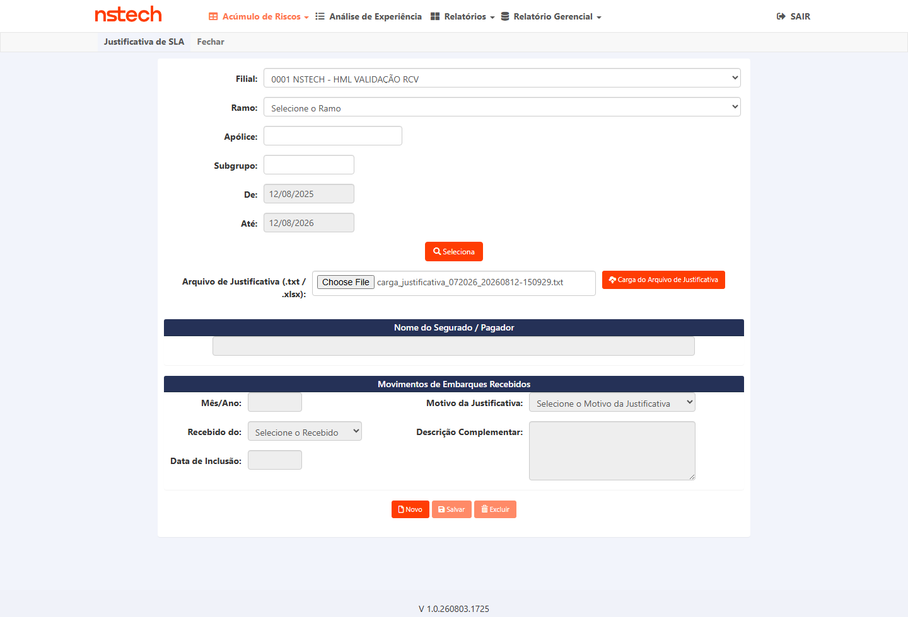
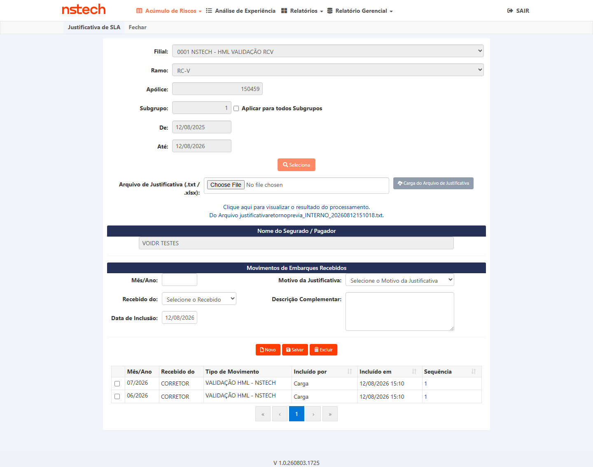
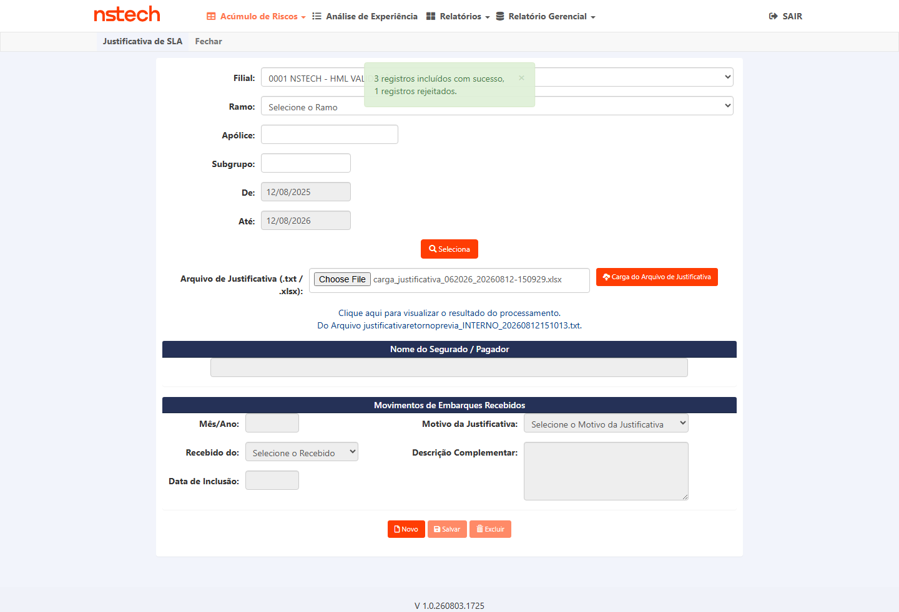
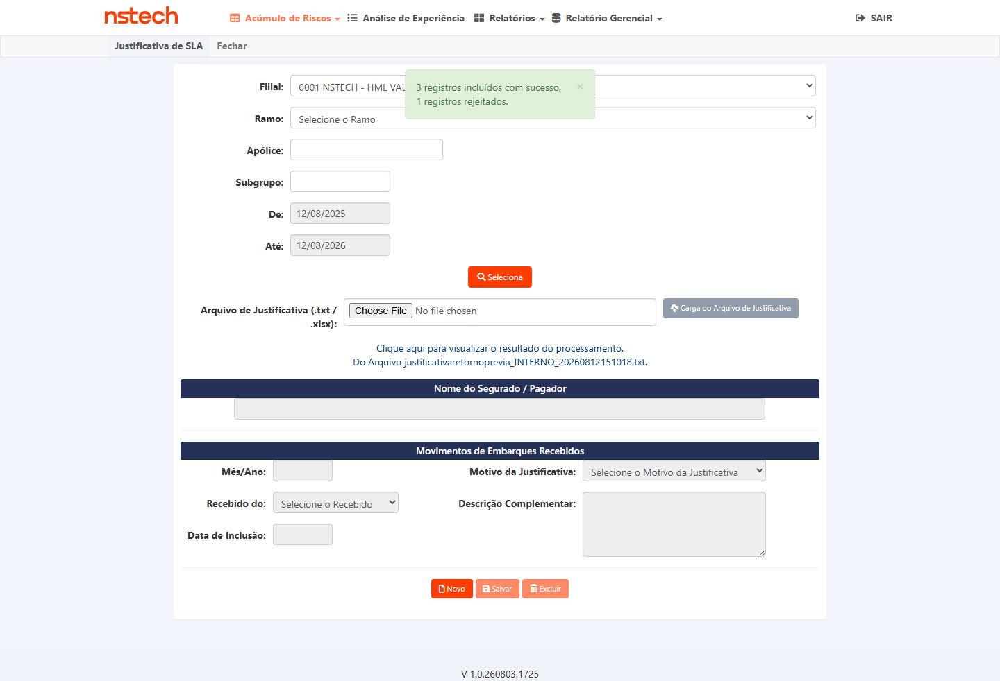
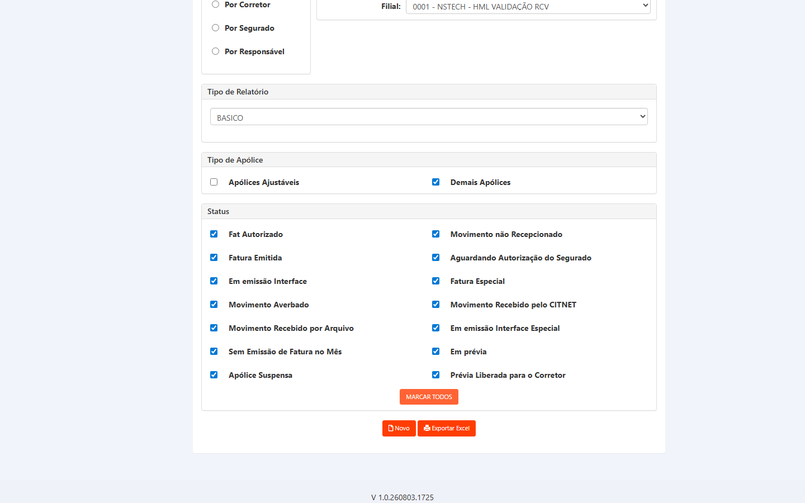
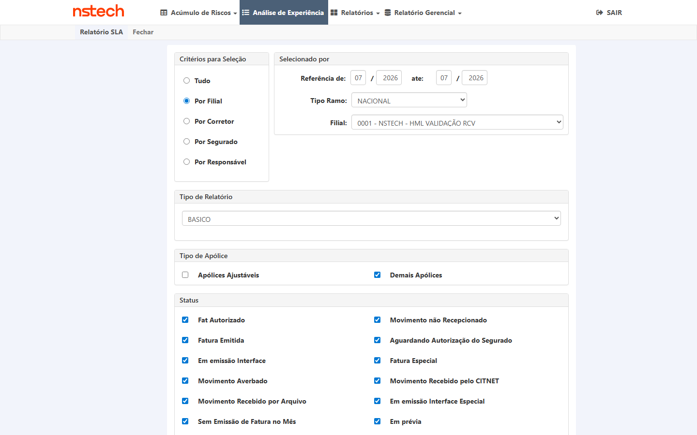

⚠️ A entrega veio em duas partes — e só metade do plano é executável hoje (atualizado 07/08/2026)
O dev entregou em 03/08/2026 (PR #1511, AIG HML, build V 1.0.260803.1725), mas o pacote cobre apenas a Justificativa de SLA. O Relatório de SLA continua fora. Isso divide o plano em dois momentos de execução:
| Grupo | CTs | Situação da entrega |
|---|---|---|
| 1 — Justificativa de SLA | CT-SLA-001, 002, 003 | entregue no PR #1511 — executável assim que o Gate 2 liberar |
| 2 — Relatório de SLA | CT-SLA-004, 005, 006, 007 | fora deste pacote — aguarda uma segunda entrega |
Smoke do próprio dev, registrado no card em 03/08: CT-SLA-001 PASS (carga XLSX processada) · CT-SLA-003 PASS (fluxo + UI aceitando .txt/.xlsx em AIG) · CT-SLA-002 PARCIAL — o log foi gerado, mas o processamento fechou em 0 de 222 linhas, e o dev registrou a dúvida como "rejeição de negócio vs massa".
Esse 0/222 é o ponto que o QA precisa resolver. São dois desfechos muito diferentes: se as 222 linhas foram recusadas por regra de negócio legítima, o CT passa; se foram recusadas por defeito de processamento, é a funcionalidade central deste card não funcionando. O smoke do dev não distingue os dois — só a execução do CT-SLA-002 com massa controlada distingue.
Fonte: comentários de José Ribeiro Carvalho (03/08 19:12) no card #7756. Task de execução: #7865 (To Do).
In scope: (1) Justificativa de SLA — origem de dados e importação via planilha/mecanismo, reflexo na tela, equivalência com o VB6; (2) Relatório de SLA — colunas/nomenclatura/ordem iguais ao modelo VB6, consistência dos dados, geração sem erro e exportação.
Out of scope: demais relatórios; regras de cálculo de SLA não relacionadas à paridade VB6; funcionalidades fora da operação BPO AIG.
Pré-requisitos:
- ✔ Atendido — correção implantada em HML pelo dev (PR #1511, build
V 1.0.260803.1725, evidências publicadas no card em 03/08/2026) e card em "Pronto para homologação"; era a pré-condição bloqueadora da execução, liberada antes da rodada de 12/08. - Ambiente: CITWEB AIG HML — acesso ao módulo Gestão → Relatórios → SLA (tipo Básico); credenciais via
.env. ✔ Resolvido: a chave AIG do CITWEB foi criada no.envpara esta execução (antes só existia a do CITNET, o que o plano listava como risco). Nunca versionar credencial. - Planilha/mecanismo de importação da Justificativa de SLA disponibilizado pelo dev (CA).
- Modelo de referência de colunas: anexo
Relatorio_SLA_Basico_GER_DDASILVA - abril.xlsx(46 colunas). - Massa: apólices/averbações RCV AIG com justificativas de SLA (com Motivo/Complemento preenchidos) e período com movimento. ✔ Confirmada na execução (12/08/2026): filial
0001— NSTECH - HML VALIDAÇÃO RCV; ramo 59 (RCV); referências01/2026(8 linhas: apólice0000100659002subs 001–006 com fatura emitida + apólices0000000150426e0000000150459sem movimento recepcionado) e07/2026(10.415 linhas). A justificativa medida de ponta a ponta foi criada pela própria carga do CT-SLA-001 na apólice0000000150459sub 001, ref 07/2026, com motivo válido.
Colunas de referência do relatório SLA (modelo VB6 — 46):
- 1. Ano/Mês Refer
- 2. Filial
- 3. Ramo
- 4. Apólice
- 5. Apólice Oficial AIG
- 6. Sub
- 7. Segurado
- 8. Corretor
- 9. Status
- 10. Dt Início Vig Apólice
- 11. Dt Fim Vig Apólice
- 12. Origem Averbações
- 13. Responsável
- 14. Moeda
- 15. IS Total
- 16. Prêmio Líquido
- 17. Prêmio Total
- 18. Prêmio Mínimo
- 19. Data de Recebimento do Movimento
- 20. Data Inclusão Prévia
- 21. Data Alteração Prévia
- 22. Data Retorno Justificativa
- 23. Nº Proposta AIG
- 24. Motivo da Justificativa
- 25. Complemento Justificativa
- 26. Data de Emissão
- 27. Nro Fatura
- 28. Qtd Dias Envio de Prévia
- 29. Qtd Dias Emissão da Fatura
- 30. Tipo de apólice
- 31. Tipo Operação
- 32. Emissor da Apólice
- 33. Nome do Embarcador
- 34. Caixa Postal
- 35. Envio Automático das Prévias
- 36. Envio das Prévias após Conferência
- 37. Geração da Prévia pelo Corretor
- 38. Assumir prêmio IS x Taxa
- 39. Aplicar Prêmio Mínimo só c/ embarques
- 40. Qtde Averbações
- 41. Complexidade
- 42. Data de Vencimento
- 43. Usuário de Fechamento
- 44. Data Fechamento da Fatura
- 45. Início Suspensão
- 46. Fim Suspensão
Grupo 1 — Justificativa de SLA (paridade com o VB6)
3▼Objetivo
CA: o sistema deve utilizar a mesma origem de dados do VB6 para atualização das justificativas de SLA, e deve haver a planilha/mecanismo de importação que atualiza essas informações.
Passos
- Login CITWEB AIG HML → tela de Justificativa de SLA
- Executar a importação pela planilha/mecanismo disponibilizado
- Confirmar que a origem de dados é a mesma do VB6 (cruzar com SQL / referência VB6)
Resultado Esperado
V 1.0.260803.1725
| O que foi medido | Resultado |
|---|---|
| Mensagem da tela após a carga | "3 registros incluídos com sucesso, 1 registros rejeitados." |
Arquivo enviado (layout @ do BPO) | carga_justificativa_072026_20260812-150929.txt — 4 linhas: 3 válidas + 1 apólice inexistente de propósito |
| Gravou em | tb_hst_cit_jst_atr — 3 linhas novas (apólice 0000000150459 sub 001 e 002, apólice 1234567890123 sub 001, ref 202607) |
| Valores conferidos linha a linha | motivo 1 ✓ · origem C (de "CORRETOR") ✓ · complemento QA 7756 carga TXT 20260812-150929 ✓ · d_inc_ret_jst = 12/08/2026 15:10 ✓ |
| Origem = a do VB6? | SIM — provado de ponta a ponta: a justificativa que entrou por este arquivo saiu no Relatório de SLA de 07/2026 (colunas 23/24/25). Ver CT-SLA-005. |

Arquivos: arquivo de retorno da carga (399 B)
Objetivo
CA: as informações apresentadas na tela devem refletir corretamente os dados processados pela planilha.
Passos
- Após a importação, abrir a tela de Justificativa de SLA
- Conferir, para uma amostra, que os valores exibidos batem com os da planilha importada
- Cruzar com SQL para 2–3 registros
Resultado Esperado
| Mês/Ano | Recebido do | Tipo de Movimento | Incluído por | Incluído em | Seq. |
|---|---|---|---|---|---|
| 07/2026 | CORRETOR | VALIDAÇÃO HML - NSTECH | Carga | 12/08/2026 15:10 | 1 |
| 06/2026 | CORRETOR | VALIDAÇÃO HML - NSTECH | Carga | 12/08/2026 15:10 | 1 |
Consulta por Filial 0001 · Ramo 59 · Apólice 150459 · Subgrupo 001. As duas linhas são as duas cargas
(TXT em 07/2026, XLSX em 06/2026); "Tipo de Movimento" exibe a descrição do motivo 1 que o arquivo enviou,
"Recebido do" exibe CORRETOR (o sistema guarda só a inicial C) e "Incluído por" marca Carga — distinguindo da inclusão manual.

Objetivo
CA: o comportamento da funcionalidade deve ser equivalente ao existente no VB6.
Passos
- Percorrer o fluxo de justificativa (consulta, atualização via importação, exibição)
- Comparar cada etapa com o comportamento do VB6
Resultado Esperado
| Etapa do fluxo VB6 | CITWEB — medido |
|---|---|
Layout do arquivo (@, 10 campos) | aceito sem conversão: APOLICE@RAMO@SGP@FILIAL@MES@ANO@COD JST@COMPLEMENTO@RECEBIDO@DATA |
| Formato do arquivo | .txt E .xlsx — os dois processaram 3 incluídos / 1 rejeitado (o XLSX é o que o PR #1511 acrescentou) |
| Arquivo de retorno linha a linha | 3× SUCESSO - + 1× ERRO -, com a linha original transcrita |
| Rejeição de negócio | apólice 9999999999999 (inexistente) rejeitada; NÃO gravou no banco |
| Consulta / exibição / atualização | grid do histórico exibe a carga com sequência própria (c_qtd_arq) |


Arquivos: arquivo de retorno da carga XLSX (403 B)
Grupo 2 — Relatório de SLA (paridade com o modelo VB6)
4▼Objetivo
CA: o relatório de SLA deve apresentar as mesmas colunas e informações do VB6 — nomenclatura, ordem e conteúdo conforme o modelo encaminhado.
Passos
- Login CITWEB AIG HML → Gestão → Relatórios → SLA (tipo Básico)
- Gerar/exportar o relatório para um período com movimento
- Comparar coluna a coluna com o modelo
Relatorio_SLA_Basico_GER_DDASILVA - abril.xlsx(46 colunas listadas nos pré-requisitos): presença, rótulo exato e ordem
Resultado Esperado
V 1.0.260803.1725
Esperado: as 46 colunas do modelo VB6, com a mesma nomenclatura e a mesma ordem.
Obtido: 46 colunas, das quais 29 coincidem em rótulo e posição; 2 do VB6 não existem
(Apólice Oficial AIG — col 5 — e Nº Proposta AIG — col 23); 2 só existem no CITWEB
(CPNJ Segurado — col 6, com a grafia trocada de CNPJ — e Assessoria — col 46); e 15 colunas
comuns saem em posição diferente (a começar por Sub, que o VB6 traz em 6 e o CITWEB em 5, e
Qtde Averbações, que salta da 40 para a 15).
Coincidir na contagem é coincidência: o CITWEB monta 17 colunas fixas + 22 condicionadas ao indicativo
Ind_Existe_tb_mov_cit_jst_atr (ativo na AIG) + 7 finais — total 46. Nenhum commit do #7756 alterou essa montagem.
| # | MODELO VB6 (anexo do card) | CITWEB gerado (AIG HML) | |
|---|---|---|---|
| 1 | Ano/Mês Refer | Ano/Mês Refer | = |
| 2 | Filial | Filial | = |
| 3 | Ramo | Ramo | = |
| 4 | Apólice | Apólice | = |
| 5 | Apólice Oficial AIG | Sub | ≠ |
| 6 | Sub | CPNJ Segurado | ≠ |
| 7 | Segurado | Segurado | = |
| 8 | Corretor | Corretor | = |
| 9 | Status | Status | = |
| 10 | Dt Início Vig Apólice | Dt Início Vig Apólice | = |
| 11 | Dt Fim Vig Apólice | Dt Fim Vig Apólice | = |
| 12 | Origem Averbações | Origem Averbações | = |
| 13 | Responsável | Responsável | = |
| 14 | Moeda | Moeda | = |
| 15 | IS Total | Qtde Averbações | ≠ |
| 16 | Prêmio Líquido | IS Total | ≠ |
| 17 | Prêmio Total | Prêmio Total | = |
| 18 | Prêmio Mínimo | Prêmio Líquido | ≠ |
| 19 | Data de Recebimento do Movimento | Prêmio Mínimo | ≠ |
| 20 | Data Inclusão Prévia | Data de Recebimento do Movimento | ≠ |
| 21 | Data Alteração Prévia | Data Inclusão Prévia | ≠ |
| 22 | Data Retorno Justificativa | Data Alteração Prévia | ≠ |
| 23 | Nº Proposta AIG | Data Retorno Justificativa | ≠ |
| 24 | Motivo da Justificativa | Motivo da Justificativa | = |
| 25 | Complemento Justificativa | Complemento Justificativa | = |
| 26 | Data de Emissão | Data de Emissão | = |
| 27 | Nro Fatura | Nro Fatura | = |
| 28 | Qtd Dias Envio de Prévia | Qtd Dias Envio de Prévia | = |
| 29 | Qtd Dias Emissão da Fatura | Qtd Dias Emissão da Fatura | = |
| 30 | Tipo de apólice | Tipo de apólice | = |
| 31 | Tipo Operação | Tipo Operação | = |
| 32 | Emissor da Apólice | Emissor da Apólice | = |
| 33 | Nome do Embarcador | Nome do Embarcador | = |
| 34 | Caixa Postal | Caixa Postal | = |
| 35 | Envio Automático das Prévias | Envio Automático das Prévias | = |
| 36 | Envio das Prévia após Conferência da Seguradora | Envio das Prévia após Conferência da Seguradora | = |
| 37 | Geração da Prévia feita pelo Corretor | Geração da Prévia feita pelo Corretor | = |
| 38 | Assumir o prêmio de I.S. Total x Taxa | Assumir o prêmio de I.S. Total x Taxa | = |
| 39 | Aplicar Prêmio Mínimo apenas quando houver embarques (S/N) | Aplicar Prêmio Mínimo apenas quando houver embarques (S/N) | = |
| 40 | Qtde Averbações | Complexidade | ≠ |
| 41 | Complexidade | Data de Vencimento | ≠ |
| 42 | Data de Vencimento | Usuario de Fechamento | ≠ |
| 43 | Usuario de Fechamento | Data Fechamento da Fatura | ≠ |
| 44 | Data Fechamento da Fatura | Inicio Suspensão | ≠ |
| 45 | Inicio Suspensão | Fim Suspensão | ≠ |
| 46 | Fim Suspensão | Assessoria | ≠ |
Relatorio_SLA_Basico_GER_DDASILVA - abril.xlsx, aba ANALISE, cabeçalho na linha 6) — não a lista transcrita no plano. Nos dois arquivos o cabeçalho está na linha 6; a comparação normaliza só espaço repetido (o VB6 alinha rótulos com espaços), preservando acento e grafia — é por isso que "CPNJ" aparece como divergência.Arquivos: relatório gerado (5.915 B · 46 colunas · 8 linhas)

Objetivo
CA: sem perda de informação em relação ao VB6 — foco nas colunas de justificativa: Data Retorno Justificativa, Nº Proposta AIG, Motivo da Justificativa, Complemento Justificativa, Qtd Dias Envio de Prévia, Qtd Dias Emissão da Fatura.
Passos
- Para uma averbação com justificativa conhecida, gerar o relatório
- Conferir que as colunas de justificativa estão preenchidas e corretas (vs. a justificativa registrada)
Resultado Esperado
Nº Proposta AIG não existe
| Coluna citada no CT | VB6 | CITWEB | Conteúdo medido |
|---|---|---|---|
| Data Retorno Justificativa | col 22 | col 23 | 12/08/2026 15:10 — exatamente o que a carga gravou |
| Nº Proposta AIG | col 23 | AUSENTE | não existe no relatório |
| Motivo da Justificativa | col 24 | col 24 | VALIDAÇÃO HML - NSTECH (descrição do motivo 1 enviado) |
| Complemento Justificativa | col 25 | col 25 | QA 7756 carga TXT 20260812-150929 (texto exato do arquivo) |
| Qtd Dias Envio de Prévia | col 28 | col 28 | presente |
| Qtd Dias Emissão da Fatura | col 29 | col 29 | presente |
A parte que passa é forte e foi medida de ponta a ponta: a justificativa que entrou pela carga do
CT-SLA-001 (apólice 0000000150459 sub 001, ref 07/2026) saiu no relatório de 07/2026 com as três colunas preenchidas com os valores
exatos do arquivo. Isso prova que a carga alimenta a MESMA origem que o relatório lê — tb_hst_cit_jst_atr em JOIN com o
cadastro de motivos tb_jst_atr_mov_cit (RelatorioSLADomain.cs:1219), enquanto as colunas 21/22 (datas de
prévia) vêm de tb_mov_cit_jst_atr.
O que reprova: Nº Proposta AIG é informação que o BPO tem hoje no VB6 e não tem no CITWEB — é perda de
informação, que é literalmente o que este CT mede. E não é só a coluna do relatório: o campo num_proposta EXISTE na
tabela tb_hst_cit_jst_atr da AIG, mas (a) o INSERT da carga não o inclui, (b) o
ImportarArquivo lê só os campos 0–9 do arquivo — ignorando o campo 10 que o próprio comentário do código descreve como
"Nº PROPOSTA opcional" — e (c) o relatório não tem coluna para ele. Medido: as 6 linhas que gravei ficaram com
num_proposta = NULL.
tb_hst_cit_jst_atr para aquela chave, e as linhas de tb_mov_cit_jst_atr têm motivo 0, que não existe no cadastro de motivos (o JOIN descarta). Foi justamente para não confundir "sem dado" com "perde dado" que a medição foi refeita com massa criada por mim, com motivo válido.Arquivos: relatório de 07/2026 com a justificativa importada (1.466.984 B · 46 colunas · 10.415 linhas)


V 1.0.260803.1725 visíveis no rodapé (o arquivo é a evidência principal)Objetivo
CA: os dados apresentados no relatório devem ser consistentes com as informações registradas no sistema.
Passos
- Gerar o relatório
- Para uma amostra de registros, cruzar valores-chave (IS Total, Prêmio, datas de prévia/justificativa) com o cadastro/movimento via UI/SQL
Resultado Esperado
| Campo do relatório | Origem no banco | Relatório × banco |
|---|---|---|
| Ano/Mês Refer · Filial · Ramo · Apólice · Sub | chave da linha | 202601 · 0001 · 59-RCV · idênticos nas 8 linhas |
| CPNJ Segurado · Segurado | tb_cli.u_cpf_cgc / n_idt_pes | [CNPJ omitido] · [CNPJ omitido] · [CNPJ omitido] — batem |
| Qtde Averbações | tb_cme_cit.q_avb_cme | 24 em cada sub — igual ao banco (o valor repetido está NA BASE, não é erro de agregação do relatório) |
| IS Total | tb_cme_cit.v_is | 0,00 — banco também 0,00 (é RCV; não há IS na conta mensal desta massa) |
| Prêmio Total | tb_cme_cit.v_pmo_tot | 3.865,68 (sub 001) e 1.073,80 (subs 002–006) — idênticos |
| Data Inclusão / Alteração Prévia | tb_mov_cit_jst_atr.d_inc_emi_prv / d_alt_emi_prv | 23/03/2026 09:18 e 26/03/2026 17:19 — idênticos, inclusive o NULL onde o banco tem NULL |
| Nro Fatura · Data de Vencimento · Usuario de Fechamento | tb_cme_cit.u_fch_mes / d_ven_cme | 2..7 · 25/04/2026 · ALEFON — batem |
| Status | classificação do relatório | FATURA EMITIDA nas linhas com fechamento; MOVIMENTO NÃO RECEPCIONADO nas sem — coerente |
Conferência por query direta em smt-hom-citweb-aig, linha a linha, com o arquivo aberto pelo openpyxl —
não por leitura de tela.
Arquivos: conferência banco × relatório — as 8 linhas de ref 01/2026 lado a lado (3.672 B)
— saída da query SELECT em tb_cme_cit ⨝ tb_mov_cit_jst_atr na base smt-hom-citweb-aig
confrontada com as linhas do XLSX exportado na mesma rodada. Inclui a confirmação de que as apólices
150426 e 150459 não têm registro em tb_cme_cit para 202601/filial 1/ramo 59,
que é exatamente o MOVIMENTO NÃO RECEPCIONADO que o relatório imprime nessas duas linhas.
Sem CNPJ e sem nome de segurado no artefato (repositório público).
Objetivo
CA: o relatório deve ser gerado sem erros e estar disponível para consulta e exportação conforme o padrão atual.
Passos
- Gerar o relatório e exportar no(s) formato(s) padrão
- Abrir e validar o arquivo baixado (não-vazio + formato válido + as 46 colunas presentes) — o próprio arquivo é evidência obrigatória
- Registrar nome, tamanho e o achado-chave
Resultado Esperado
| Export | Arquivo | Tamanho | Colunas | Linhas de dados | Tempo |
|---|---|---|---|---|---|
| ref 01/2026 · filial 0001 | Relatorio-SLA-Basico-NACIONAL-filial1-01-2026_20260812.xlsx | 5.915 B | 46 | 8 | 30 s |
| ref 07/2026 · filial 0001 | Relatorio-SLA-Basico-NACIONAL-filial1-07-2026_20260812.xlsx | 1.466.984 B | 46 | 10.415 | 335 s |
Os dois abriram como XLSX válido (openpyxl), com título, subtítulo, critério de seleção, data de geração e cabeçalho na linha 6 — o padrão da aplicação. Nenhuma tela de erro, nenhuma exceção. O arquivo é a evidência, conforme a regra de CT de relatório.
Arquivos: revalidação do conteúdo dos dois arquivos exportados (4.926 B) — cada arquivo foi reaberto e medido (tamanho, "abre como XLSX", nº de colunas, nº de linhas de dados, linhas 1–3 de título/subtítulo/critério, cabeçalho na linha 6) e o artefato lista as 46 colunas na ordem do arquivo. Os dois XLSX em si estão linkados nos blocos CT-SLA-004 (ref 01/2026) e CT-SLA-005 (ref 07/2026) — mesma rodada de 12/08/2026, são os mesmos arquivos medidos aqui. Sem CNPJ e sem nome de segurado neste artefato (repositório público).
AND apo.c_rmo <> 59. Com só "Demais Apólices" o mesmo mês tinha 9.552 linhas candidatas. Foi a primeira tentativa desta execução e ela lê como "sem massa" — registrado em features/ para não custar outro ciclo.Placar: 7 APROVADO · 0 REPROVADO · 0 pendente. Reclassificação por decisão de Produto (Fabíola Costa, 14/08/2026): os CT-SLA-004/005, antes reprovados por não baterem com o modelo VB6, foram reclassificados APROVADOS — o Relatório de SLA da AIG é idêntico ao da KOVR (comprovado em 14/08: 46 colunas, mesma ordem, download real da KOVR), então a divergência de colunas legado (VB6) ↔ CITWEB é esperada e não constitui bug. O oráculo correto é "paridade com o padrão CITWEB (== KOVR)", que a AIG atende.
- Justificativa de SLA (CT-SLA-001/002/003) — aprovada. Carga TXT e XLSX processando, retorno linha a linha com SUCESSO/ERRO, tela refletindo o arquivo e — o ponto que fecha o CA — o dado gravado pela carga saindo no Relatório de SLA.
- Relatório de SLA (CT-SLA-004/005) — aprovado por decisão de Produto (divergências VB6↔CITWEB esperadas, idênticas às da KOVR). 46 colunas dos dois lados, 29 coincidindo; faltam
Apólice Oficial AIGeNº Proposta AIG, sobramCPNJ Segurado(grafia trocada) eAssessoria, e 15 colunas comuns mudam de posição. - CT-SLA-006/007 — aprovados. Os dados que o relatório imprime batem com o banco e o arquivo é válido: o problema é o que falta, não o que está lá.
- Massa criada pelo QA nesta execução (a carga do dev em 03/08 tinha massa de outro ambiente): arquivos de carga montados a partir do banco da AIG, com apólices vigentes de ramo 59 / filial 0001 e uma linha inválida proposital para provar a rejeição.
| Critério de aceite | CT(s) |
|---|---|
| Justificativa — mesma origem de dados do VB6 + planilha/mecanismo de importação | CT-SLA-001 |
| Justificativa — tela reflete os dados processados pela planilha | CT-SLA-002 |
| Justificativa — comportamento equivalente ao VB6 | CT-SLA-003 |
| Relatório — mesmas colunas/nomenclatura/ordem do VB6 (modelo encaminhado) | CT-SLA-004 |
| Relatório — sem perda de informação vs VB6 (colunas de justificativa) | CT-SLA-005 |
| Relatório — dados consistentes com o sistema | CT-SLA-006 |
| Relatório — gerado sem erros e exportável conforme padrão | CT-SLA-007 |
| Atender integralmente a operação do BPO AIG (sem perda vs VB6) | CT-SLA-003 + CT-SLA-005 (transversal) |
- Coluna faltando/renomeada vs VB6 (Alto): perda de informação para o BPO. Mitigação: CT-SLA-004 (comparação coluna a coluna com o modelo anexo).
- Planilha de importação não disponibilizada (Alto p/ cronograma): sem ela não se valida a Justificativa. Mitigação: deliverable do dev (CA); acompanhar até a homologação.
- Origem de dados divergente do VB6 (Alto): justificativas inconsistentes. Mitigação: CT-SLA-001/002 (cruzamento com origem/SQL).
- Acesso AIG ao relatório SLA (Médio): hoje só há credencial CITNET AIG no
.env. Mitigação: confirmar credencial/ambiente do relatório SLA AIG antes da execução. - Export incompleto/erro (Médio): arquivo vazio/corrompido ou sem colunas. Mitigação: CT-SLA-007 valida o arquivo.